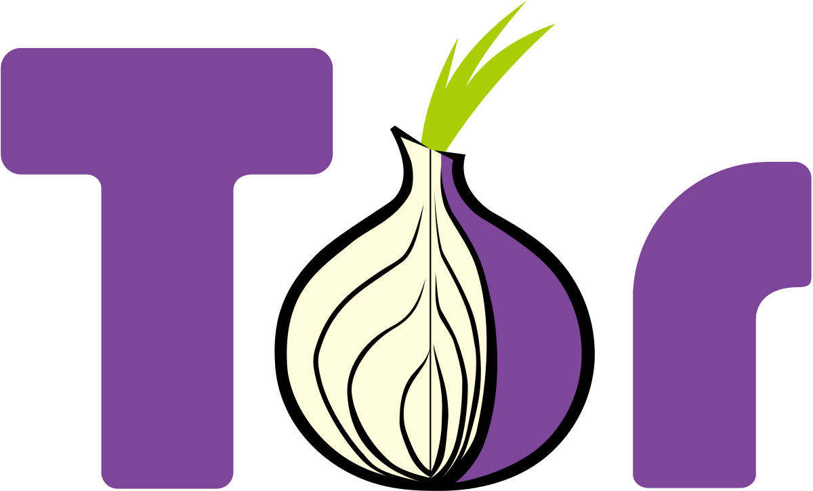

Logiciels Open Source
Une alternative aux GAFAM


Mozilla Firefox
Navigateur web
Mozilla Firefox est un navigateur web OpenSource qui vous permet d'aller sur Internet
en toute simplicité et à partir de tous vos appareils connectés.


Tor Browser
Navigateur web
Le Tor Browser est un navigateur web libre basé sur Mozilla Firefox ESR qui permet de
naviguer anonymement sur le réseau d'anonymisation Tor.